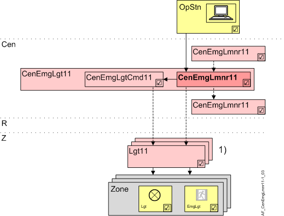
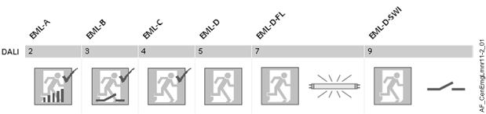

Central emergency luminaire function (CenEmgLmnr11)
Overview
The application function "Central emergency luminaire function 11, control and test function" (CenEmgLmnr11) handles operation and testing of emergency luminaires on the DALI bus.
Test results are saved in the emergency luminaires. The management station can trigger batch testing and test protocols.
The AF is only available in ABT Pro, since only PXC3...A room automation stations have a DALI interface.

OpStn | Operator unit |
Cen | Central functions |
CenEmgLgt11 | Central emergency lighting 11. This AF can be a group member of a superordinate AF CenOpLgt11 or the group manager for subordinate AFs CenOpLgt11. |
CenEmgCmdLgt11 1) | Central emergency command for lighting 11 |
CenEmgLmnr11 1) | Central emergency luminaire function 11, control and test function |
R | Room |
Z | Lighting zone in one room segment |
Lgt11 1) | Lighting 11, group members |
Lgt | Lamp |
EmgLgt | Emergency luminaires |
1) | CenEmgCmdLgt11 and CenEmgLmnr11 either act on AFs Lgt11 as group member or direct on lighting zones (BACnet objects) as group members. |
Function
Supported emergency luminaires
Continuous switching (emergency luminaires continuously switched on) | Standby switching (emergency luminaires ON during a power outage) | ||
|---|---|---|---|
EML-A | Emergency luminaires | EML-D | Emergency luminaires |
EML-B | Emergency luminaires + dimmable lamps | EML-D-FL | Emergency luminaires + dimmable lamps |
EML-C | Emergency luminaires + switchable lamps | EML-D-SWI | Emergency luminaires + switchable lamps |

Test and operation
DALI emergency luminaires have integrated test and operating functions. Depending on the actual device, only a portion of the list below is supported.
The AF works with grouping so that a large number of emergency luminaires can be tested simultaneously.
Enter the commands supported by the connected group members.
Possible commands
- Ready.
State: Ready for entry of a command. - Start function test
Briefly sets the device to power outage state. - Start duration test
Sets the device to power outage state over a long period to test battery capacity. - Start short duration test
Sets the device to power outage state long enough to be able to calculate battery capacity without fully discharging the batteries. - Stop active test
Stops an on-going function or on-going continuous test. - Go to rest mode
Overrides active power outage state and switches off the device. The command may only be ran during an active power outage state; it helps to save batteries if the situation is safe. - Go to inhibit mode
Prevents the device from switch to the power outage state (starts an inhibit timers for 15 minutes). The command can only be run while power is available. It is used for scheduled power outages. - Cancel inhibit mode (Relight)
Rescinds the inhibit mode or reset mode and switches the device to emergency operation. This command can only be run during an active power outage state. - Reset inhibit mode
Rescinds the inhibit mode and switches the device to normal operation. The command can only be run while power is available. - Reset lamp op.hours
Resets the operating hours for the emergency luminaires.
Hierarchical grouping
This AF supports hierarchical grouping. For detailed information, see Hierarchical grouping.
Configuration
 Parameter
Parameter
Configures which functions/commands the connect emergency luminaires supports.
Description | Parameter | Default value |
|---|---|---|
Function test | FnctTst | False |
Duration test | DurTst | False |
Short duration test | ShrtDurTst | False |
Stop active test | StpTst | False |
Rest mode | RestMod | False |
Inhibit mode | InhMod | False |
Cancel inhibit mode (Relight) | CnclInhMod | False |
Reset inhibit mode | RstInhMod | False |
Lamp operating hours | LampOph | False |
Switched or dimmable lamp | LampSwiDim | False |
Interface
Interface | Description | Type | Ref. | Owner |
|---|---|---|---|---|
EmgLmnrCtl | Emergency luminaire control command 1:Ready | MTrgVal | ● | - |
CenEmgLgtMst | Manager for central emergency lighting | GrpMaster | ◉ | CenEmgLgt11 |
Engineering and commissioning
The AF is unavailable on preloaded applications.
CenEmgCmdLgt11 must be used if using emergency luminaires together with switchable/dimmable lamps in order to be able to send a switch-off command.